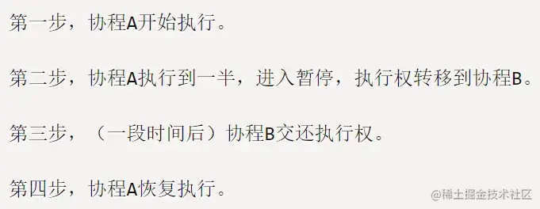

async、await 实现原理
参考答案
JavaScript 异步编程回顾
由于 JavaScript 是单线程执行模型，因此必须支持异步编程才能提高运行效率。异步编程的语法目标是让异步过程写起来像同步过程。
1. 回调函数
回调函数，就是把任务的第二段单独写在一个函数里面，等到重新执行这个任务的时候，就直接调用这个函数。
const fs = require('fs')
fs.readFile('/etc/passwd', (err, data) => {
if (err) {
console.error(err)
return
}
console.log(data.toString())
})回调函数最大的问题是容易形成回调地狱，即多个回调函数嵌套，降低代码可读性，增加逻辑的复杂性，容易出错。
fs.readFile(fileA, function (err, data) {
fs.readFile(fileB, function (err, data) {
// ...
})
})2. Promise
为解决回调函数的不足，社区创造出 Promise。
const fs = require('fs')
const readFileWithPromise = file => {
return new Promise((resolve, reject) => {
fs.readFile(file, (err, data) => {
if (err) {
reject(err)
} else {
resolve(data)
}
})
})
}
readFileWithPromise('/etc/passwd')
.then(data => {
console.log(data.toString())
return readFileWithPromise('/etc/profile')
})
.then(data => {
console.log(data.toString())
})
.catch(err => {
console.log(err)
})简单的 Promise 实现，窥探下本质
Promise 实际上是利用编程技巧将回调函数的横向加载，改成纵向加载，达到链式调用的效果，避免回调地狱。最大问题是代码冗余，原来的任务被 Promise 包装了一下，不管什么操作，一眼看去都是一堆 then，原来的语义变得很不清楚。
3. async、await
为了解决 Promise 的问题，async、await 在 ES8 中被提了出来，是目前为止最好的解决方案
const fs = require('fs')
async function readFile() {
try {
var f1 = await readFileWithPromise('/etc/passwd')
console.log(f1.toString())
var f2 = await readFileWithPromise('/etc/profile')
console.log(f2.toString())
} catch (err) {
console.log(err)
}
}\async、await 函数写起来跟同步函数一样，条件是需要接收 Promise 或原始类型的值。异步编程的最终目标是转换成人类最容易理解的形式。
async、await
分析 async、await 实现原理之前，先介绍下预备知识
1. generator
generator 函数是协程在 ES6 的实现。协程简单来说就是多个线程互相协作，完成异步任务。

整个 generator 函数就是一个封装的异步任务，异步操作需要暂停的地方，都用 yield 语句注明。generator 函数的执行方法如下：
function* gen(x) {
console.log('start')
const y = yield x * 2
return y
}
const g = gen(1)
g.next() // start { value: 2, done: false }
g.next(4) // { value: 4, done: true }gen()不会立即执行，而是一上来就暂停，返回一个Iterator对象（具体可以参考 [Iterator遍历器](https://link.juejin.cn?target=https%3A%2F%2Fgithub.com%2Fwangfupeng1988%2Fjs-async-tutorial%2Fblob%2Fmaster%2Fpart4-generator%2F02-iterator.md "https://github.com/wangfupeng1988/js-async-tutorial/blob/master/part4-generator/02-iterator.md") ）- 每次
g.next()都会打破暂停状态去执行，直到遇到下一个yield或者return - 遇到
yield时，会执行yield后面的表达式，并返回执行之后的值，然后再次进入暂停状态，此时done: false。 next函数可以接受参数，作为上个阶段异步任务的返回结果，被函数体内的变量接收- 遇到
return时，会返回值，执行结束，即done: true - 每次
g.next()的返回值永远都是{value: ... , done: ...}的形式
2. thunk函数
JavaScript 中的 thunk 函数（译为转换程序）简单来说就是把带有回调函数的多参数函数转换成只接收回调函数的单参数版本
const fs = require('fs')
const thunkify = fn => (...rest) => callback => fn(...rest, callback)
const thunk = thunkify(fs.readFile)
const readFileThunk = thunk('/etc/passwd', 'utf8')
readFileThunk((err, data) => {
// ...
})单纯的 thunk 函数并没有很大的用处， 大牛们想到了和 generator 结合：
function* readFileThunkWithGen() {
try {
const content1 = yield readFileThunk('/etc/passwd', 'utf8')
console.log(content1)
const content2 = yield readFileThunk('/etc/profile', 'utf8')
console.log(content2)
return 'done'
} catch (err) {
console.error(err)
return 'fail'
}
}
const g = readFileThunkWithGen()
g.next().value((err, data) => {
if (err) {
return g.throw(err).value
}
g.next(data.toString()).value((err, data) => {
if (err) {
return g.throw(err).value
}
g.next(data.toString())
})
})thunk 函数的真正作用是统一多参数函数的调用方式，在 next 调用时把控制权交还给 generator，使 generator 函数可以使用递归方式自启动流程
const run = generator => {
const g = generator()
const next = (err, ...rest) => {
if (err) {
return g.throw(err).value
}
const result = g.next(rest.length > 1 ? rest : rest[0])
if (result.done) {
return result.value
}
result.value(next)
}
next()
}
run(readFileThunkWithGen)有了自启动的加持之后，generator 函数内就可以写"同步"的代码了。generator 函数也可以与 Promise 结合：
function* readFileWithGen() {
try {
const content1 = yield readFileWithPromise('/etc/passwd', 'utf8')
console.log(content1)
const content2 = yield readFileWithPromise('/etc/profile', 'utf8')
console.log(content2)
return 'done'
} catch (err) {
console.error(err)
return 'fail'
}
}
const run = generator => {
return new Promise((resolve, reject) => {
const g = generator()
const next = res => {
const result = g.next(res)
if (result.done) {
return resolve(result.value)
}
result.value
.then(
next,
err => reject(gen.throw(err).value)
)
}
next()
})
}
run(readFileWithGen)
.then(res => console.log(res))
.catch(err => console.log(err))generator 可以暂停执行，很容易让它和异步操作产生联系，因为我们在处理异步操作时，在等待的时候可以暂停当前任务，把程序控制权交还给其他程序，当异步任务有返回时，在回调中再把控制权交还给之前的任务。generator 实际上并没有改变 JavaScript 单线程、使用回调处理异步任务的本质。
3. co 函数库
每次执行 generator 函数时自己写启动器比较麻烦。 co函数库 是一个 generator 函数的自启动执行器，使用条件是 generator 函数的 yield 命令后面，只能是 thunk 函数或 Promise 对象，co 函数执行完返回一个 Promise 对象。
const co = require('co')
co(readFileWithGen).then(res => console.log(res)) // 'done'
co(readFileThunkWithGen).then(res => console.log(res)) // 'done'co 函数库的源码实现其实就是把上面两种情况做了综合:
// 做了简化，与源码基本一致
const co = (generator, ...rest) => {
const ctx = this
return new Promise((resolve, reject) => {
const gen = generator.call(ctx, ...rest)
if (!gen || typeof gen.next !== 'function') {
return resolve(gen)
}
const onFulfilled = res => {
let ret
try {
ret = gen.next(res)
} catch (e) {
return reject(e)
}
next(ret)
}
const onRejected = err => {
let ret
try {
ret = gen.throw(err)
} catch (e) {
return reject(e)
}
next(ret)
}
const next = result => {
if (result.done) {
return resolve(result.value)
}
toPromise(result.value).then(onFulfilled, onRejected)
}
onFulfilled()
})
}
const toPromise = value => {
if (isPromise(value)) return value
if ('function' == typeof value) {
return new Promise((resolve, reject) => {
value((err, ...rest) => {
if (err) {
return reject(err)
}
resolve(rest.length > 1 ? rest : rest[0])
})
})
}
}
4. 理解 async、await
一句话，async、await 是 co 库的官方实现。也可以看作自带启动器的 generator 函数的语法糖。不同的是，async、await 只支持 Promise 和原始类型的值，不支持 thunk 函数。
// generator with co
co(function* () {
try {
const content1 = yield readFileWithPromise('/etc/passwd', 'utf8')
console.log(content1)
const content2 = yield readFileWithPromise('/etc/profile', 'utf8')
console.log(content2)
return 'done'
} catch (err) {
console.error(err)
return 'fail'
}
})
// async await
async function readfile() {
try {
const content1 = await readFileWithPromise('/etc/passwd', 'utf8')
console.log(content1)
const content2 = await readFileWithPromise('/etc/profile', 'utf8')
console.log(content2)
return 'done'
} catch (err) {
throw(err)
}
}
readfile().then(
res => console.log(res),
err => console.error(err)
)总结
不论以上哪种方式，都没有改变 JavaScript 单线程、使用回调处理异步任务的本质。人类总是追求最简单易于理解的编程方式。
async 和 await 是 ES2017 (ES8) 中引入的，用于简化基于 Promise 的异步代码编写。它们使得异步代码看起来和写起来更像是同步代码，从而提高了代码的可读性和易维护性。
实现原理
1. Promise
首先，理解 async 和 await 的实现原理需要先了解 Promise。Promise 是一个代表了异步操作最终完成或失败的对象。它有两种状态：pending（进行中）、fulfilled（已成功）或 rejected（已失败）。一旦 Promise 被 fulfilled 或 rejected，它的状态就不能再改变。Promise 通过 .then() 和 .catch() 方法来处理异步操作的结果或错误。
2. async 函数
async 函数是一个返回 Promise 对象的函数。你可以使用 await 在 async 函数内部等待 Promise 解决。async 函数隐式地将返回值包装在一个 Promise 中，或者如果函数抛出异常，则返回一个被拒绝的 Promise。
async function fetchData() {
return 'some data';
}
// 相当于
function fetchData() {
return Promise.resolve('some data');
}3. await 表达式
await 表达式会暂停 async 函数的执行，等待 Promise 解决（fulfilled 或 rejected），然后继续执行 async 函数并返回解决的值。如果 Promise 被拒绝，await 表达式会抛出一个错误，这个错误可以被 async 函数外部的 try...catch 捕获。
async function asyncCall() {
try {
let result = await someAsyncCall(); // 等待 Promise 解决
console.log(result);
} catch (error) {
console.error(error);
}
}4. 生成器函数（Generator Functions）的灵感
虽然 async/await 的具体实现并不直接依赖于生成器函数（Generator Functions），但它们的设计受到了生成器函数的启发。生成器函数允许你通过 yield 表达式暂停和恢复函数的执行。async/await 可以看作是自动处理 Promise 的生成器函数的语法糖。
5. 底层实现
在底层，JavaScript 引擎（如 V8）通过状态机（state machine）或类似的机制来管理 async 函数的执行和暂停。当 await 表达式被遇到时，JavaScript 引擎会将当前执行上下文（包括局部变量、调用栈帧等）保存起来，等待 Promise 解决。一旦 Promise 解决，JavaScript 引擎将恢复 async 函数的执行，并返回解决的值或抛出错误。
总结
async 和 await 的实现原理基于 Promise，通过自动处理 Promise 的解决和拒绝，以及使用底层机制来暂停和恢复函数的执行，来简化异步代码的编写。这使得异步代码看起来更像是同步代码，提高了代码的可读性和可维护性。